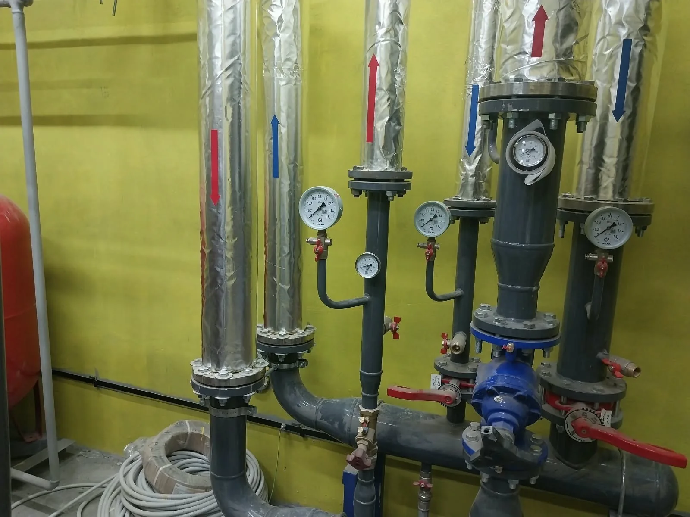
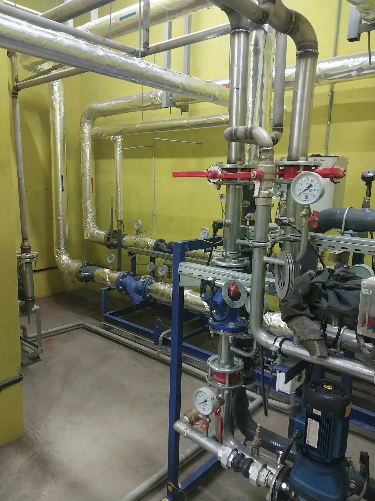
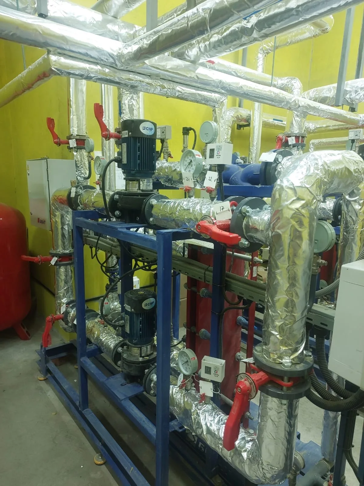
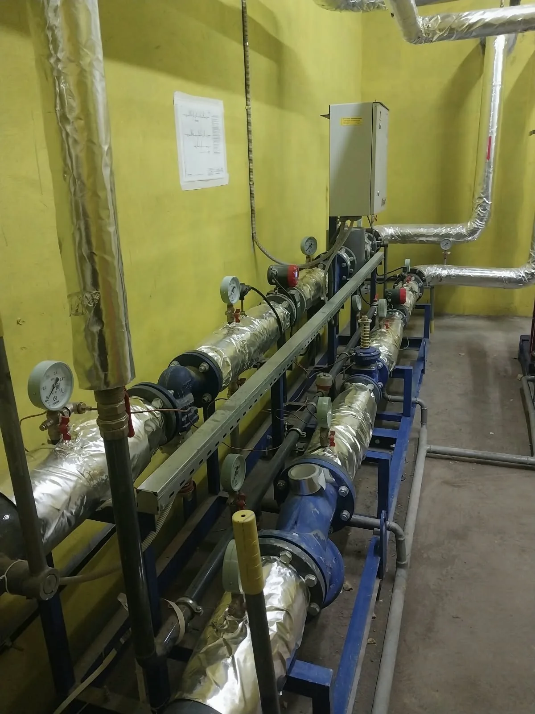

3 фото
3 фотоВнутренние системы
Насосный узел в техническом помещении
Насосы, шкаф управления и разводка трубопроводов внутри здания.
Смотреть работуОбвязка оборудования, арматура и теплоизоляция в техническом помещении.
Обсудить похожую задачу Смотреть все фото
Смотреть все фото Работы с трубопроводами и оборудованием теплового пункта. В помещении расположены насосные узлы, запорная арматура, манометры и линии в теплоизоляции.
Общие планы показывают компоновку оборудования, а крупные — соединения, отводы и доступ к органам управления. На одном из снимков зафиксирован процесс работы в техническом помещении.
Нажмите на фото, чтобы рассмотреть детали.




Расскажите, какие работы нужны и где находится объект.